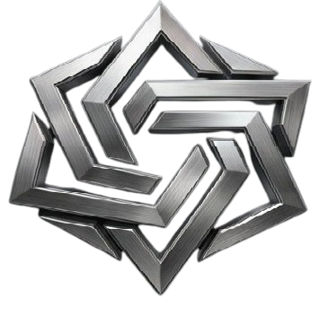

Consultoria
Assessoria administrativa e gestão empresarial
Implantação de ERP, indicadores, organograma, fluxo de caixa, DRE e processos, para que a diretoria deixe o operacional e decida com dados.
Solicitar propostaVer detalhesNa Vórtice Soluções Globais, unimos Gestão Empresarial, Tecnologia e Produção em um ecossistema completo de soluções. Com sede no estado de São Paulo, atendemos empresas em todo o território nacional e mantemos contratos e projetos na América do Norte. Desde 2021, ajudamos empresas, indústrias, organizações religiosas e negócios em expansão a organizar operações, reduzir custos, automatizar processos e crescer com eficiência, tecnologia e produção de alta qualidade. Mais que serviços, entregamos crescimento sustentável, inovação e resultados mensuráveis.

Cinco frentes que funcionam isoladamente ou de forma integrada, com um único ponto de contato.
Implantação de ERP, indicadores, organograma, fluxo de caixa, DRE e processos, para que a diretoria deixe o operacional e decida com dados.
Solicitar propostaVer detalhes
Rede estruturada, Wi-Fi corporativo, firewall, VPN, backup em nuvem e monitoramento contínuo com painéis Grafana e Zabbix.
Solicitar propostaVer detalhes
Plano de conteúdo, produção de vídeo, design, copy, tráfego pago e relatório mensal de desempenho, com foco em geração de clientes.
Solicitar propostaVer detalhes
Produção própria com bordado industrial de 15 agulhas em Piquet, PV e algodão premium. Polos, camisetas, bonés e ecobags de 10 a 5.000 unidades, além de estampas e brindes personalizados.
Solicitar propostaVer detalhes
Router CNC 1325 (área de 1300 x 2500 mm) e Laser Cutter 100W para placas, letras caixa, troféus, displays e protótipos, do projeto em CAD ao acabamento.
Solicitar propostaVer detalhesAo longo dos últimos 5 anos, a Vórtice Soluções Globais participou da transformação de empresas, organizações e instituições no Brasil e no exterior, atuando em gestão empresarial, tecnologia, produção e marketing digital.
A parceria com a Vórtice foi fundamental para a evolução da nossa empresa. Recebemos apoio em gestão empresarial, assessoria administrativa, suporte técnico e uniformização corporativa. O atendimento próximo e o compromisso com resultados fizeram toda a diferença para nosso crescimento.
A Vórtice atua como parceira estratégica da Cast-A-Way, empresa canadense com operações internacionais, prestando suporte técnico especializado para colaboradores distribuídos em diferentes países. O atendimento abrange usuários de múltiplas localidades, garantindo padronização, estabilidade operacional e rápida resolução de incidentes em toda a estrutura tecnológica da organização.
Além do suporte técnico global, a Vórtice realiza o acompanhamento contínuo da segurança cibernética corporativa, apoiando a proteção de ativos digitais, monitoramento de ambientes, aplicação de boas práticas de segurança da informação e mitigação de riscos em toda a infraestrutura da empresa.
A combinação entre gestão empresarial, suporte técnico internacional e cybersecurity transformou a Vórtice em um parceiro essencial para a sustentação e evolução das operações globais da Cast-A-Way.
A Vórtice contribuiu diretamente para a evolução do ministério, desde os uniformes personalizados até TI, CNC Router e gestão de redes sociais. O resultado foi uma operação mais organizada e uma presença digital muito mais profissional.
Uma única empresa para cuidar da Gestão, Tecnologia e Produção do seu negócio.
Entendemos sua operação, desafios e objetivos.
Desenhamos a solução mais adequada para sua realidade.
Executamos com acompanhamento próximo.
Indicadores, relatórios e suporte contínuo.
Resultados sustentáveis e evolução constante.

Fundada em 2021 por Mathews Brito, a Vórtice Soluções Globais nasceu para integrar Gestão Empresarial, Tecnologia e Produção em uma única estrutura estratégica. Com sede no estado de São Paulo, expandimos nossa atuação para clientes em diversas regiões do Brasil e atualmente mantemos contratos e projetos na América do Norte. Nosso objetivo é oferecer soluções completas para empresas que buscam crescimento sustentável, profissionalização de processos e resultados mensuráveis.
Enquanto a maioria das empresas atua em apenas uma área específica, a Vórtice integra Gestão Empresarial, Assessoria Administrativa, Tecnologia, Segurança Cibernética, Produção CNC, Uniformes Corporativos e Marketing Digital em uma única estrutura operacional.
Isso permite que nossos clientes encontrem diversas soluções estratégicas em um único parceiro de negócios, reduzindo custos, simplificando processos e aumentando a eficiência operacional.
Otimizar processos, elevar a produtividade e sustentar o crescimento das empresas com tecnologia e produção de alta performance.
Ser referência nacional em integração de gestão, tecnologia e produção para empresas em expansão.
Resultado, transparência, inovação contínua, atendimento humano e compromisso com o crescimento do cliente.
A Vórtice Soluções Globais possui sede no estado de São Paulo, onde concentra parte de suas operações presenciais. Também atendemos clientes em todo o Brasil por meio de consultoria, gestão empresarial, assessoria administrativa, suporte técnico, marketing digital, uniformização corporativa e produção industrial. Além do mercado nacional, mantemos contratos e projetos na América do Norte, ampliando nossa experiência internacional e capacidade de atender organizações de diferentes segmentos e portes.
Nossa sede está localizada no Estado de São Paulo, onde realizamos atendimentos presenciais regulares. Também atendemos empresas em todo o território nacional de forma remota e, em projetos estratégicos ou de grande porte, nossa equipe pode realizar visitas presenciais diretamente na localidade do cliente.
Sim. Atualmente mantemos contratos e projetos internacionais na América do Norte, oferecendo suporte tecnológico, gestão empresarial, segurança cibernética e consultoria especializada para operações internacionais.
Sim. Muitos clientes utilizam duas ou mais soluções da Vórtice simultaneamente. Nosso diferencial é justamente integrar Gestão Empresarial, Tecnologia e Produção dentro da mesma estrutura operacional.
Sim. Atendemos pequenos negócios, empresas em crescimento, indústrias, instituições religiosas, profissionais autônomos e organizações de médio porte.
Inicialmente realizamos um diagnóstico da operação do cliente. A partir dessa análise, desenvolvemos processos, indicadores, relatórios gerenciais, controles financeiros e ferramentas que ajudam a empresa a crescer de forma organizada e sustentável.
Sim. Oferecemos suporte remoto e presencial, monitoramento de infraestrutura, administração de redes, segurança cibernética, backup corporativo e acompanhamento contínuo das operações de TI.
Sim. Cada empresa possui necessidades específicas. Todos os projetos são avaliados individualmente para que possamos apresentar uma solução adequada à realidade e aos objetivos do cliente.
Basta enviar uma foto, desenho ou arquivo técnico. Nossa equipe analisa a demanda, elabora o projeto quando necessário e produz as peças utilizando tecnologia CNC Router, laser e outros processos industriais.
Trabalhamos com produção própria e parceiros homologados para garantir qualidade, padronização e acabamento profissional em todos os uniformes corporativos.
Após entendermos sua necessidade, normalmente enviamos um diagnóstico inicial e uma proposta personalizada em até 24 horas úteis.
Prezamos pelo relacionamento próximo com nossos clientes. Dependendo do projeto, o atendimento pode ser realizado diretamente pelo fundador Mathews Brito ou por especialistas responsáveis pela execução da solução contratada.
Porque reunimos Gestão Empresarial, Assessoria Administrativa, Tecnologia, Segurança Cibernética, Redes Sociais, Uniformes Corporativos e Produção CNC em uma única empresa. Isso significa menos fornecedores, mais integração e mais resultados para o seu negócio.
Descreva o cenário e o objetivo. Respondemos em até 2 horas úteis.
Se sua empresa precisa de mais organização, tecnologia, produtividade e resultados, a Vórtice está pronta para ajudar. Atuamos presencialmente em São Paulo, atendemos clientes em todo o Brasil e desenvolvemos projetos internacionais na América do Norte.
Usamos cookies de medição para entender como o site é utilizado. Veja a Política de Privacidade.